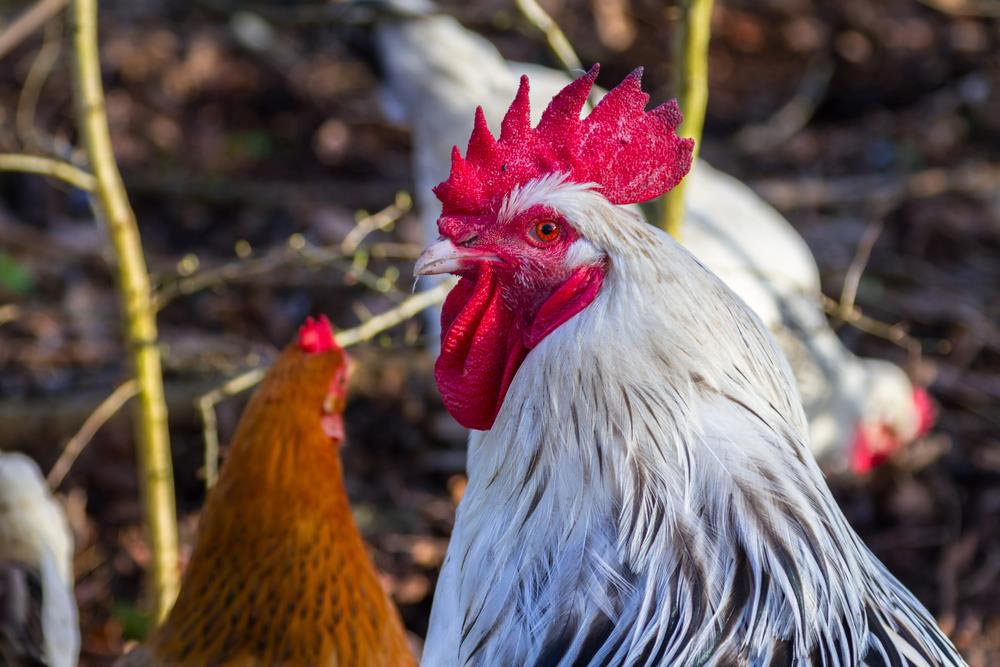
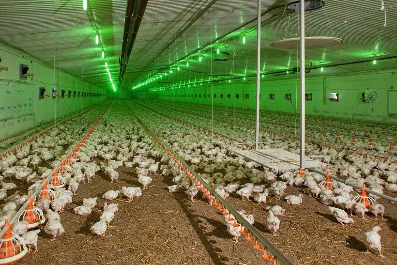

Породы кур.

Если предприниматель выбрал выращивание бройлеров и кур-несушек, он должен
ознакомиться с породами и их характеристиками.
Породы бройлеров:
-
корниш. В возрасте 6 недель вес достигает 2 килограммов. Вес взрослой
курицы — до 4 килограммов. Яйценоскость — 125 яиц ежегодно;
- кохинхин. Вес курицы — до 3,5 килограммов;
-
американский белый плимутрок. Вес взрослой курицы достигает 3
килограммов. Сносит курица до 180 яиц в год;
-
орпингтон. Средний вес достигает 3,5 килограммов. Продуктивность — 150
яиц в год.
Породы кур-несушек:
- леггорн. Яйценоскость — 300 яиц весом до 58 граммов каждое;
- кучинская юбилейная. Продуктивность — до 220 яиц в год;
-
тетра. Характеризуются крепким иммунитетом. За год сносят до 300 яиц
весом 70 граммов каждое.
Каждой породе присущи особенности в содержании, уходе. Они учитываются при
выращивании птицы.
Выбор места: площадь и цена аренды

В силу специфики бизнеса помещение предприниматель ищет не исходя из
проходимости человекопотока.
Открывать предприятие по выращиванию птицы в городе невыгодно с точки
зрения экологии. Поэтому площадка для птицефермы подбирается за пределами
города. Требуется обеспечить:
- наличие территории для выгула кур-несушек;
- удобные транспортные пути для доставки продукции контрагентам;
-
тишину. Она необходима курам-несушкам. Резкие звуки способны испугать
птицу, что скажется на яйценоскости;
- посев травы на территории;
- присутствие небольшой постройки с кабинетом для сотрудников.
Предприниматель самостоятельно решает, какую площадь требуется взять в
аренду. Ее величина зависит от поголовья птицы, которую планируется
выращивать. За территорию в виде студии площадью 200-250 кв.м. попросят 50
000 — 60 000 рублей.